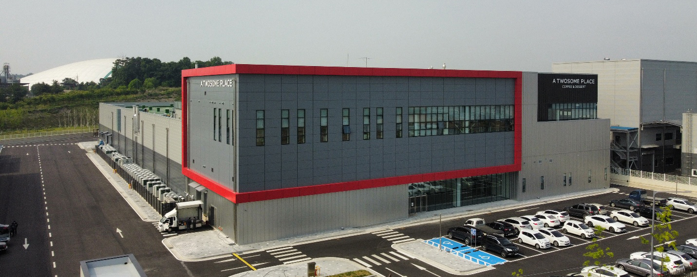

어썸 페어링 플랜트
Awesome Pairing Plant
- 원두 로스팅부터 고객의 손에 들리는 한 잔의 커피까지, 최고의 커피 품질을 만듭니다.
- 어썸 페어링 플랜트의 커피 로스팅팀은 국내 최고의 커피 생산 전문가들로 구성되었으며 식품안전관리인증 기준인 HACCP인증을 적용해 원료 입고, 로스팅부터 고객에게 전해지는 한 잔의 커피까지 믿을 수 있는 품질을 만듭니다.
- 커피의 본고장 이탈리아에서 70년의 역사를 이어온 브람바티(BRAMBATI) 로스팅 설비를 도입했으며, 브람바티 로스터의 핵심 기술인 ‘15단계 자동 프로파일 교정 시스템’을 통해 365일 늘 같은 품질의 로스팅을 진행하고 있습니다.
- 생두 투입부터 로스팅, 포장까지 전 공정이 자동화로 이루어진 로스팅 플랜트는 원두 색상 선별(Color-Sorter) 적용 시스템을 통해 이물과 결점두(Quaker)를 제거해 균일한 원두 품질을 유지하며, 세계 각국의 커피 산지별로 엄선된 커피 농장을 찾아 고품질의 생두를 매월 직수입하고 있습니다.
- 해외에서 수입하는 원료를 외부 위해 요인으로부터 안전하게 보호하기 위해 이중 포장 공법인 그레인프로포장(Grain-pro bag)을 적용해 운송∙보관하는 과정에서 생두의 품질을 최상의 상태로 유지합니다.
- 투썸플레이스 커피 로스팅팀에서 생산된 커피를 Q-Grader로 구성된 내부 전문가 그룹에서 엄격하게 관리함으로써 고객 니즈에 맞춰 발 빠르게 대응하며 대한민국 커피 트렌드를 리드하고 있습니다.
- 최고의 커피와 함께 할 특별한 디저트를 만듭니다.
- 어썸 페어링 플랜트의 디저트 생산팀은 최적화된 생산 시스템을 갖추고 투썸플레이스의 시그니처 케이크인 스트로베리 초콜릿 생크림을 비롯한 다양한 케이크와 디저트를 생산해 고객의 니즈에 부합하고자 노력하고 있습니다.
- HACCP인증 뿐만 아니라, 원료 입고, 제품 생산 공정 관리, 제품 출고에 이르는 전 과정에서 철저한 품질 관리 시스템을 통해 고객에게 최고의 제품을 제공합니다.
- 나아가 국내 최고의 프리미엄 디저트 카페로서 고객에게 최고의 경험을 선사하고자 케이크 및 디저트 관련 기술 개발과 투자를 이어가고 있습니다.